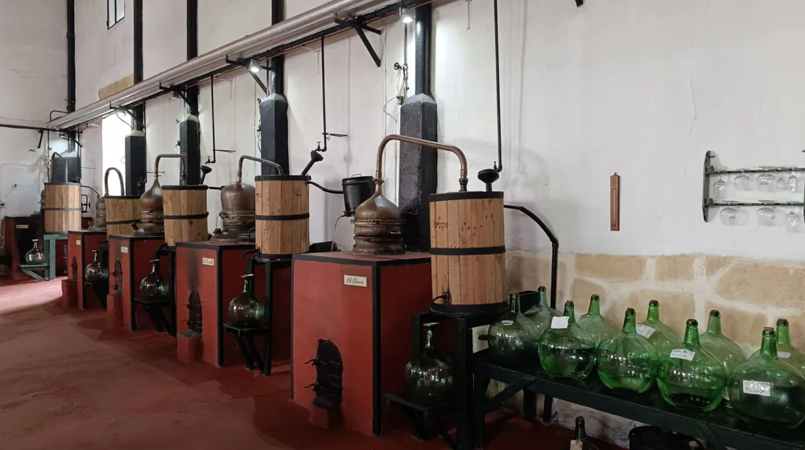

숨겨진 맛을 찾아서: 지역별 소규모 가양주 양조장 투어 완벽 가이드
사진: Markus Winkler / Pexels (무료 이미지, 출처 표기)
나만의 특별한 술 여행, 가양주 양조장 투어 왜 떠나야 할까요?

획일적인 여행 코스에 지쳐 새로운 경험을 찾고 계신가요? 집집마다 고유의 비법으로 빚어 내려오던 전통주인 가양주(家釀酒)는 각 지역의 역사와 문화가 고스란히 담겨 있습니다. 소규모 가양주 양조장 투어는 단순히 술을 맛보는 것을 넘어, 장인의 손길과 스토리를 통해 우리 술의 매력을 깊이 이해할 수 있는 기회입니다.
특히 최근에는 젊은 양조인들의 감각적인 시도와 함께 가양주 양조장이 단순한 생산 시설을 넘어 문화 체험 공간으로 진화하고 있습니다. 잘 알려지지 않은 숨겨진 보석 같은 양조장을 방문하여 특별한 추억을 만들 수 있습니다.
나에게 맞는 가양주 양조장, 어떻게 찾을까요?
전국 곳곳에 자리한 소규모 가양주 양조장을 찾는 것은 생각보다 어렵지 않습니다. 농림축산식품부 산하 한국전통주진흥원이나 각 지역 관광재단 홈페이지에서 전통주 관련 정보를 얻을 수 있습니다. 또한, 온라인 포털 사이트에서 'OO 지역 가양주' 또는 'OO 양조장 투어'로 검색하면 다양한 양조장과 방문 후기를 찾아볼 수 있습니다.
특히 각 양조장마다 주력하는 술의 종류(막걸리, 약주, 증류주 등)와 추구하는 분위기가 다르므로, 자신의 취향과 여행 스타일에 맞춰 신중하게 선택하는 것이 중요합니다. 방문 목적에 따라 체험 프로그램 유무나 숙박 연계 가능성 등도 함께 고려해볼 수 있습니다.
성공적인 가양주 투어를 위한 예약 및 준비 팁
대부분의 소규모 양조장은 사전 예약제로 운영됩니다. 방문하고 싶은 양조장을 정했다면 반드시 공식 홈페이지나 전화로 투어 가능 여부, 운영 시간, 그리고 예약 방법을 미리 확인해야 합니다. 특히 주말이나 공휴일에는 인원이 몰릴 수 있으므로 넉넉하게 시간을 두고 예약하는 것을 권장합니다.
양조장은 대중교통 접근성이 낮은 경우가 많으므로 자가용 이용을 고려해야 합니다. 이때 운전을 할 사람(일명 '대리운전자')을 미리 정해 술 시음 후 안전하게 이동할 수 있도록 준비하는 것이 필수입니다. 편안한 신발과 복장은 양조장 견학 및 체험 활동에 도움이 될 것입니다.
양조장 투어 프로그램, 어떤 체험이 있을까?
가양주 양조장 투어는 단순히 술을 마시는 것을 넘어 다채로운 체험 프로그램으로 구성되는 경우가 많습니다. 2026년 8월 기준으로 일반적인 프로그램은 다음과 같습니다. 정확한 내용은 각 양조장에 문의해야 합니다.
일부 양조장에서는 자신만의 가양주를 만들고 일정 기간 후 택배로 받아볼 수 있는 특별한 프로그램도 제공합니다. 방문 전에 어떤 프로그램이 있는지 확인하여 원하는 체험을 선택하세요.
가양주 양조장 방문 시 주의할 점
즐거운 가양주 투어를 위해 몇 가지 유의사항을 숙지하는 것이 좋습니다. 첫째, 시음 시 지나친 음주는 삼가고, 반드시 음주운전을 피해야 합니다. 대중교통 이용이 어렵다면 대리운전이나 숙박 시설을 미리 예약하는 것을 권장합니다.
둘째, 양조장은 술을 만드는 중요한 공간이므로, 정숙하고 질서 있는 관람 태도를 유지해야 합니다. 특히 발효실이나 숙성고 등은 온습도 관리가 중요하니, 허락 없이 들어가거나 시설물을 훼손하는 행위는 절대 금물입니다. 마지막으로, 양조장에서 판매하는 술이나 기념품은 지역 특색을 담은 귀한 제품들이므로, 구매 전에 유통기한이나 보관 방법을 꼼꼼히 확인하는 것이 좋습니다.
가양주 양조장 투어는 우리 고유의 술 문화를 체험하고 지역 경제에 활력을 불어넣는 의미 있는 여정이 될 수 있습니다. 이 가이드가 여러분의 특별한 가양주 여행에 도움이 되기를 바랍니다.
🔗 이 글도 함께 보면 좋아요: 피부 타입별 각질 관리, 이거 모르면 오히려 독! 완벽 가이드
관련 추천 상품
전통주 선물 세트, 가양주 키트, 술잔 세트 관련 인기 상품 보러가기
이 포스팅은 쿠팡 파트너스 활동의 일환으로, 이에 따른 일정액의 수수료를 제공받습니다.